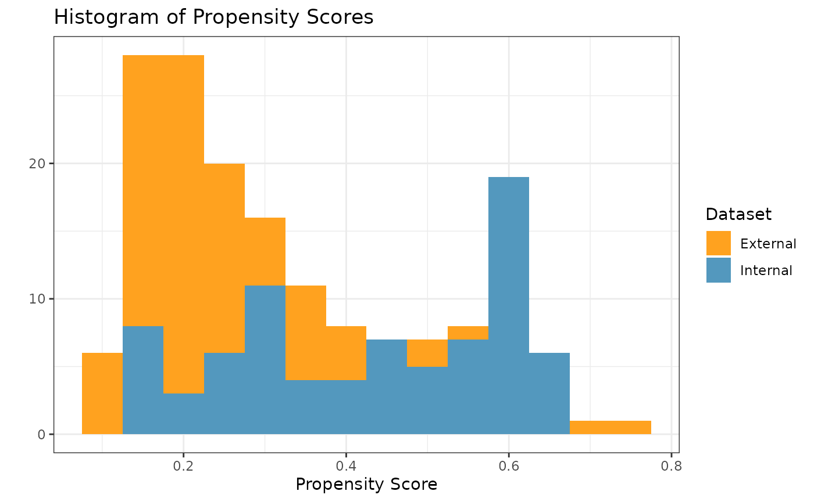
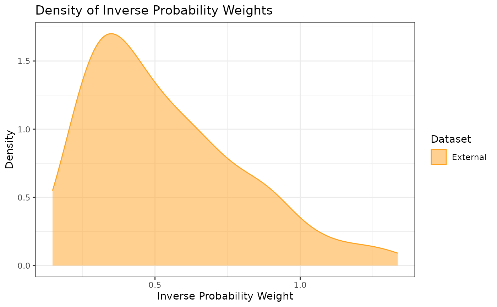
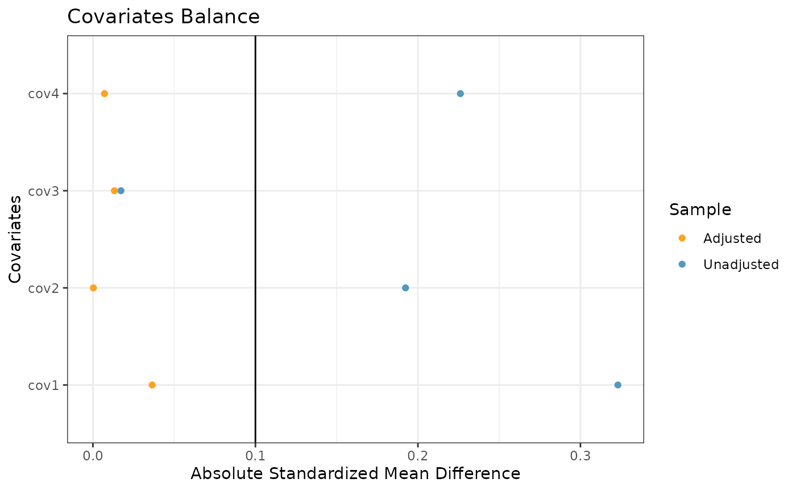
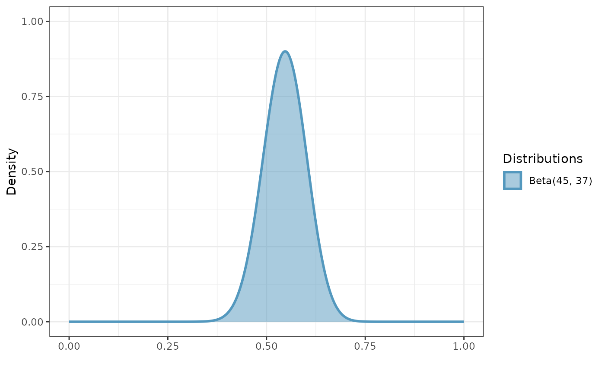
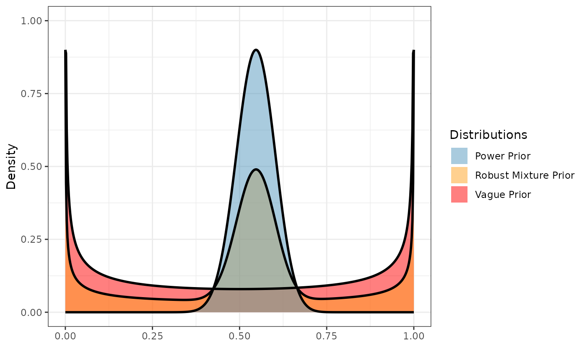
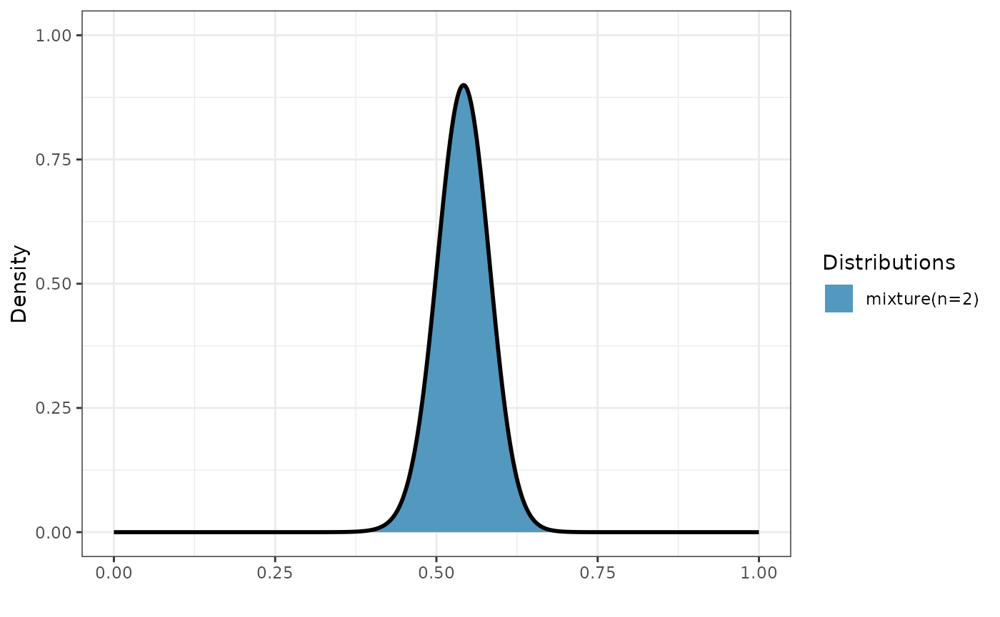
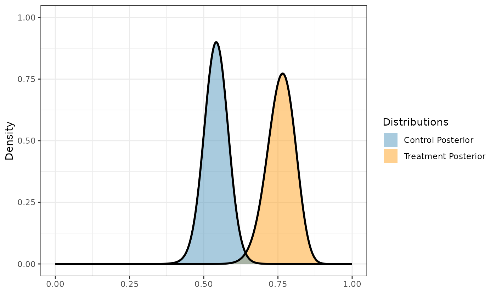

vignettes/binary.Rmd
binary.RmdIn this example, we illustrate how to use Bayesian dynamic borrowing (BDB) with the inclusion of inverse probability weighting to balance baseline covariate distributions between external and internal datasets. This particular example considers a hypothetical trial with a binary endpoint, and our objective is to use BDB with IPWs to construct a posterior distribution for the control response rate . We will use simulated internal and external datasets from the package where each dataset has a binary response variable (1: positive response, 0: otherwise) and four baseline covariates which we will balance.
The external control dataset has a sample size of 150 participants, and the distributions of the four covariates are as follows: - Covariate 1: normal with a mean and standard deviation of approximately 65 and 10, respectively - Covariate 2: binary (0 vs. 1) with approximately 30% of participants with level 1 - Covariate 3: binary (0 vs. 1) with approximately 40% of participants with level 1 - Covariate 4: binary (0 vs. 1) with approximately 50% of participants with level 1
The internal dataset has 160 participants with 80 participants in each of the control arm and the active treatment arms. The covariate distributions of each arm are as follows: - Covariate 1: normal with a mean and standard deviation of approximately 62 and 8, respectively - Covariate 2: binary (0 vs. 1) with approximately 40% of participants with level 1 - Covariate 3: binary (0 vs. 1) with approximately 40% of participants with level 1 - Covariate 4: binary (0 vs. 1) with approximately 60% of participants with level 1
library(beastt)
library(distributional)
library(dplyr)
#>
#> Attaching package: 'dplyr'
#> The following objects are masked from 'package:stats':
#>
#> filter, lag
#> The following objects are masked from 'package:base':
#>
#> intersect, setdiff, setequal, union
library(ggplot2)
summary(int_binary_df)
#> subjid cov1 cov2 cov3
#> Min. : 1.00 Min. :40.00 Min. :0.0 Min. :0.0000
#> 1st Qu.: 40.75 1st Qu.:59.00 1st Qu.:0.0 1st Qu.:0.0000
#> Median : 80.50 Median :64.00 Median :0.0 Median :0.0000
#> Mean : 80.50 Mean :62.98 Mean :0.4 Mean :0.3937
#> 3rd Qu.:120.25 3rd Qu.:68.00 3rd Qu.:1.0 3rd Qu.:1.0000
#> Max. :160.00 Max. :80.00 Max. :1.0 Max. :1.0000
#> cov4 trt y
#> Min. :0.0000 Min. :0.0 Min. :0.000
#> 1st Qu.:0.0000 1st Qu.:0.0 1st Qu.:0.000
#> Median :1.0000 Median :0.5 Median :1.000
#> Mean :0.5938 Mean :0.5 Mean :0.575
#> 3rd Qu.:1.0000 3rd Qu.:1.0 3rd Qu.:1.000
#> Max. :1.0000 Max. :1.0 Max. :1.000
summary(ex_binary_df)
#> subjid cov1 cov2 cov3
#> Min. : 1.00 Min. :40.00 Min. :0.0000 Min. :0.0000
#> 1st Qu.: 38.25 1st Qu.:57.25 1st Qu.:0.0000 1st Qu.:0.0000
#> Median : 75.50 Median :66.00 Median :0.0000 Median :0.0000
#> Mean : 75.50 Mean :65.21 Mean :0.2733 Mean :0.3667
#> 3rd Qu.:112.75 3rd Qu.:71.00 3rd Qu.:1.0000 3rd Qu.:1.0000
#> Max. :150.00 Max. :93.00 Max. :1.0000 Max. :1.0000
#> cov4 y
#> Min. :0.0000 Min. :0.0000
#> 1st Qu.:0.0000 1st Qu.:0.0000
#> Median :1.0000 Median :0.0000
#> Mean :0.5267 Mean :0.4867
#> 3rd Qu.:1.0000 3rd Qu.:1.0000
#> Max. :1.0000 Max. :1.0000With the covariate data from both the external and internal datasets,
we can calculate the propensity scores and ATT inverse probability
weights (IPWs) for the internal and external controls using the
calc_prop_scr function. This creates a propensity score
object which we can use for calculating a inverse probability weighted
power prior in the next step.
Note: when reading external and internal datasets into
calc_prop_scr, be sure to include only the treatment arms
across which you want to balance the covariate distributions.
In this example, we want to balance the covariate distributions of the
external control arm to be similar to those of the internal control arm,
so we will exclude the internal active treatment arm data from this
function.
ps_obj <- calc_prop_scr(internal_df = filter(int_binary_df, trt == 0),
external_df = ex_binary_df,
id_col = subjid,
model = ~ cov1 + cov2 + cov3 + cov4)
ps_obj
#>
#> ── Model ───────────────────────────────────────────────────────────────────────
#> • cov1 + cov2 + cov3 + cov4
#>
#> ── Propensity Scores and Weights ───────────────────────────────────────────────
#> # A tibble: 150 × 4
#> subjid Internal `Propensity Score` `Inverse Probability Weight`
#> <int> <lgl> <dbl> <dbl>
#> 1 1 FALSE 0.342 0.520
#> 2 2 FALSE 0.312 0.453
#> 3 3 FALSE 0.221 0.284
#> 4 4 FALSE 0.461 0.854
#> 5 5 FALSE 0.531 1.13
#> 6 6 FALSE 0.444 0.798
#> 7 7 FALSE 0.424 0.735
#> 8 8 FALSE 0.254 0.340
#> 9 9 FALSE 0.334 0.501
#> 10 10 FALSE 0.242 0.319
#> # ℹ 140 more rows
#>
#> ── Absolute Standardized Mean Difference ───────────────────────────────────────
#> # A tibble: 4 × 3
#> covariate diff_unadj diff_adj
#> <chr> <dbl> <dbl>
#> 1 cov1 0.323 0.0365
#> 2 cov2 0.192 0.000289
#> 3 cov3 0.0173 0.0132
#> 4 cov4 0.226 0.00715In order to check the suitability of the external data, we can create
a variety of diagnostic plots. The first plot we might want is a
histogram of the overlapping propensity score distributions from both
datasets. To get this, we use the prop_scr_hist function.
This function takes in the propensity score object made in the previous
step, and we can optionally supply the variable we want to look at
(either the propensity score or the IPW). By default, it will plot the
propensity scores. Additionally, we can look at the densities rather
than histograms by using the prop_scr_dens function. When
looking at the IPWs with either the histogram or the density functions,
it is important to note that only the IPWs for external control
participants will be shown because the ATT IPWs of all internal control
participants are equal to 1.
prop_scr_hist(ps_obj)
prop_scr_dens(ps_obj, variable = "ipw")
The final plot we might want to look at is a love plot to visualize
the absolute standard mean differences (both unadjusted and adjusted by
the IPWs) of the covariates between the internal and external data. To
do this, we use the prop_scr_love function. Like the
previous function, the only required parameter for this function is the
propensity score object, but we can also provide a location along the
x-axis for a vertical reference line.
prop_scr_love(ps_obj, reference_line = 0.1)
Now that we are happy with our propensity score object, we can use it to calculate a beta inverse probability weighted power prior for . To calculate the power prior, we need to supply:
weighted object, the propensity score we created above
response variable, in this case
initial prior, in the form of a beta distributional object
Once we have a power prior, we might want to plot it. To do that, we
use the plot_dist function.
pwr_prior <- calc_power_prior_beta(ps_obj,
response = y,
prior = dist_beta(0.5, 0.5))
plot_dist(pwr_prior)
Now that we have a beta power prior, we can calculate the posterior
distribution for
using the calc_post_beta function. By defining our prior to
be a beta distribution, the resulting posterior distribution will also
be beta.
Note: if reading internal data directly into
calc_post_beta instead of a propensity score object, be
sure to include only the treatment arm of interest (e.g., the internal
control arm if creating a posterior distribution for
).
post <- calc_post_beta(ps_obj,
response = y,
prior = pwr_prior)
plot_dist(post)
If we want to robustify our power prior for
,
we can add a vague component to the power prior distribution we
previously created to construct a robust mixture prior which we can then
pass to calc_post_beta. In general, we can define our prior
to be a mixture distribution with an arbitrary number of beta
components, in which case the resulting posterior distribution will also
be a mixture of beta components.
mix_prior <- dist_mixture(pwr_prior,
dist_beta(0.5, 0.5),
weights = c(0.5, 0.5))
post_mixed <- calc_post_beta(ps_obj,
response = y,
prior = mix_prior)
plot_dist("Control Posterior" = post,
"Mixed Posterior" = post_mixed)
Lastly, we can also create a posterior distribution for the response
rate of the active treatment arm by reading the internal data directly
into the calc_post_beta function. In this case, we assume a
vague beta prior.
As noted earlier, be sure to read in only the data for the internal active treatment arm while excluding the internal control data.
post_treated <- calc_post_beta(internal_data = filter(int_binary_df, trt == 1),
response = y,
prior = dist_beta(0.5, 0.5))
plot_dist("Control Posterior" = post,
"Mixed Posterior" = post_mixed,
"Treatment Posterior" = post_treated)